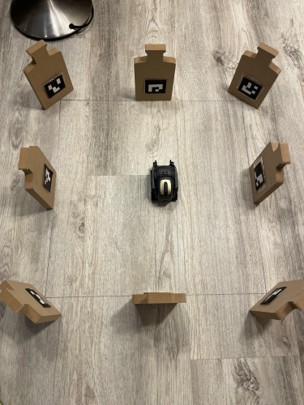

Scalable Swarm Robotics in GPS-Denied Environments
Overview
Swarm algorithms have seen significant development in simulation environments; however real-world validation is essential for verifying their robustness, scalability, and performance under uncertainty. Simulation often abstracts away critical real-world constraints, while experimental testbeds bridge the gap, providing feedback on swarm theory and design. We propose a testbed using Anki Vector’s, commercially available differential drive mobile robots equipped with an HD Camera and their own processor enabling onboard compute. Our hope is to deliver a scalable swarm testbed that can operate in GPS-denied environments.
Approach
Off-the-shelf, the Anki Vector is an AI-powered robot companion. However to tailor the robot towards our swarm application, we need to engineer the following local abilities:
- Online Robot Detection
- Inter-Robot Distance Estimation
- Target Following
- Real Time Pose Estimation
In a decentralized swarm, agents are constantly reacting to their local neighborhoods. This constant process results in collective and emergent behaviors like flocking in birds or diamonds formations in schools of fish. The listed local abilities are performed by each agent, allowing easy scale to more agents. Additionally, each tool is developed with real-time operations in mind.
Online Robot Detection
The first objective was to teach a Vector robot to recognize another Vector. To achieve this, we designed and implemented a computer vision pipeline capable of detecting and tracking nearby Vectors. This process began with manually collecting 300 images from the robot’s onboard camera, augmenting the dataset with noise, and labeling each image. We then trained a lightweight YOLO model using transfer learning, leveraging pre-trained object classification to accelerate development and improve accuracy.


As shown in the plots, the mean average precision reached near 1 over time, while validation box loss steadily decreased, indicating effective learning. We stopped training at 30 epochs, as loss had nearly converged. Precision and recall also peaked early, suggesting some overfitting may exist, but the performance is acceptable for our use case.
Inter-Robot Distance Estimation
After detecting a Vector in the frame using our computer vision model, the next step is estimating its distance. On detections, YOLO returns a bounding box around the detected Vector, and using the pinhole camera model, can calculate the camera's focal length. The focal length basically tells us how much an image is scaled. With this focal length, bounding box height, and known real-world height of the Vector, we can estimate the distance. Lastly we use height rather than width, since width varies significantly with orientation.
- himg = height of image
- hobj = height of object
- hbb = height of bounding box

To collect data for this plot, we positioned a stationary Vector facing forward with a measuring tape placed parallel to it. Initially, the Vector was directly in front of the other Vector’s camera. We then systematically moved the Vector in 10 mm increments, recording both the distance from the tape and the corresponding model reading at each step. This process was repeated for both front-facing and side-facing orientations, comparing the results to the ideal scenario. The distance estimates were generally reasonable, though the model tended to overestimate when the Vector was very close. This inaccuracy is understandable given the difficulty of precise depth estimation at such short ranges. To address this, we plan to apply our recently calculated camera intrinsic calibration, which we expect will improve distance estimates at close range.
Target Following
Within an agent's local neighborhood, it operates according to three primary objectives: maintaining personal space from nearby agents, orienting toward individuals at an optimal distance, and seeking out others if it finds itself isolated. Target following enables the agent to pursue a detected target, in the case of isolation. To accomplish target following, we employed a simplified kinematic state feedback controller. By leveraging the Vector’s dynamics, we can control its motion to follow a target both quickly and accurately using only linear and angular gains. The control law used is given by the following equation:
- p: distance to the target
- ùõº: angle to the target
- kp: linear gain
- kùõº: angular gain
Real-Time Pose Estimation
Knowing a neighbor's orientation is crucial for developing a swarm, as an agent will align itself with a neighbor if that neighbor lies within an optimal distance threshold. Individual pose estimation is essential for enabling coordinated collective behavior. We implemented this using OpenCV’s ArUco markers, homogeneous frame transformations, and an Extended Kalman Filter for smooth and accurate real-time pose estimation. An initial step was to develop a centralized perception system that would maitain all active poses of deployed Vectors.
Aruco Marker Setup
Our starting test environment consists of a 400 x 400 milimeter square space, with eight markers along the edges. A picture can be seen below:
Fixed Landmark Localization
After calibrating the camera, we leveraged these markers as fixed reference points to estimate the robot’s pose within a global frame. We define the global frame as a 2D coordinate system (x,y). When the Vector’s camera captures a raw image, it searches for visible markers. If a marker is detected, we retrieve its pose relative to the camera frame. Referring to the transformation chain below, our end objective is to get the camera in global frame.
$$ {}^{\text{Global}}\mathbf{T}_{\text{Camera}} = {}^{\text{Global}}\mathbf{T}_{\text{Marker}} \cdot \left({}^{\text{Camera}}\mathbf{T}_{\text{Marker}}\right)^{-1} $$
$$ \Downarrow $$
$$ {}^{\text{Global}}\mathbf{T}_{\text{Camera}} = {}^{\text{Global}}\mathbf{T}_{\text{Marker}} \cdot {}^{\text{Marker}}\mathbf{T}_{\text{Camera}} $$
This transformation chain multiplies works because the Marker's cancel out in the multiplication. Here each T represents a 4 by 4 homogenous transformation matrix, comprised of a rotation matrix and trasnlation vector. Once performed we can obtain a relatively accurate estimate within our small test area. However, these marker-based “GPS-like” readings can be noisy and unreliable at times. Pose ambiguity can lead to mirrored or incorrect readings, extreme viewing angles cause poor detections, and lighting conditions further affect accuracy. And the biggest challenge is, markers are not always within the camera’s field of view, limiting continuous pose tracking.
Extended Kalman Filter
As discussed previously, while our marker-based localization provides valuable pose estimates, it is inherently noisy and unreliable when markers are not in view. To mitigate these limitations, we implemented a simple odometry-based motion model that performs dead reckoning using wheel speed data.
However, odometry alone is susceptible to errors such as wheel slippage and accumulates drift over time, making it unsuitable for long-term state estimation. In contrast, camera-based localization is drift-free but can suffer from intermittent inaccuracies and occlusions. To leverage the complementary strengths of both systems, we integrated an Extended Kalman Filter (EKF). The EKF is particularly well-suited for estimating the state of systems with nonlinear dynamics in real time. In our approach, the prediction step of the EKF uses odometry to estimate the next state based on the previous one, while the update step incorporates camera-based observations to correct and refine the prediction. This fusion allows us to maintain a more accurate and robust estimate of the robot’s pose over time.
Results
The plots below highlight the sensor fusion performed by the EKF in the video demo. Showcasing how the EKF selectively trusts either the camera-based observations (in orange) or the odometry data (in blue) at different times, illustrating how it performs iterative filtering in real time.


Limitations & Challenges
Sequential development of individual tools has helped us progressively transform the off-the-shelf Vector robot into a more intelligent and capable agent. However, we are still far from achieving our goal of building a fully functional swarm testbed. A key limitation is the lack of a reliable method for determining a neighbor’s orientation. Our current approach uses a centralized perception system, where each robot's pose is published in real time to a central server. While this works well within a small 400 x 400 mm operating space, it does not scale effectively to larger environments. Expanding to areas such as a 2 x 2 meter workspace, several challenges emerge. Marker visibility decreases significantly, leading to increased pose ambiguity at greater distances, along with more general sensor noise. In regions where markers become unreliable or completely occluded, the system must fall back on dead reckoning. Resulting in increased drift and a higher likelihood of inter-agent collisions.
Future Work
To address the described challenges, we are currently implementing Visual Odometry to supplement and reinforce our real-time pose estimation. Integrating Visual Odometry will provide an additional data stream for fusion in our Extended Kalman Filter (EKF), improving robustness and accuracy. In parallel, we are developing the multi-threaded architecture required to deploy and manage over 10 Vectors concurrently from a single PC, further pushing toward scalable swarm operation.